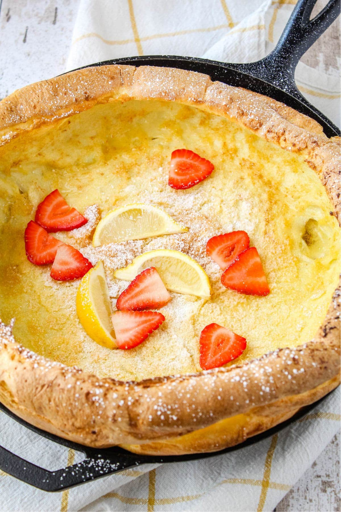

german-pancake

ingridienten
bereiding
- Preheat your oven to 400 degrees and melt the butter in a big cast iron skillet in the preheating oven.
- While all that’s going on, make the pancake batter.
- Put the skillet back into your oven and bake for about 20 minutes.